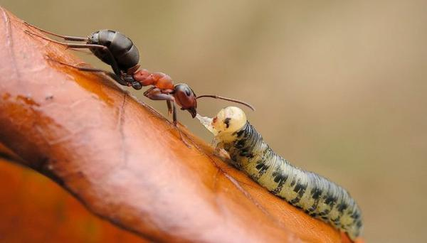

Это зависит от размеров муравьёв.
Если муравьи маленького размера то они придерживаются этого способа: рабочие задерживают большого муравья солдата или любого другого большого насекомого пока идёт муравей солдтат который уже атакует.
Некоторые муравьи засыпают вход в муравейник песком или камнями.
Если муравей большого вида то он может сам сразится с таким большим врагом как пчела, оса, шершень.
Это тоже зависит от размеров врага и муравья
Если мурай маленького размера то он сам может напасть на муху или малого жука, если враг более большой тут уже участвуют муравьи-солдаты.
Если муравей большого вида то он может сам сразится с таким большим врагом как пчела, оса, шершень.
Они могут поймать даже змею!
